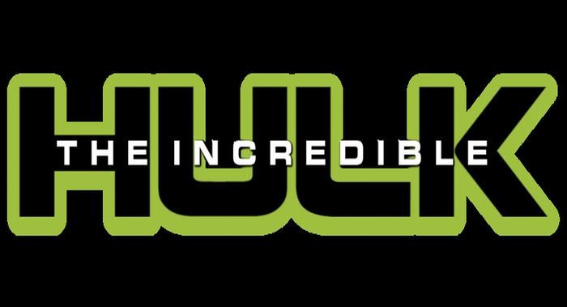

Sipnosis
El científico Bruce Banner (Edward Norton) recorre el mundo en busca de un antídoto que le permita librarse de su Alter Ego. Perseguido por el ejército y dominado por su propia rabia, es incapaz de sacarse de la cabeza a Betty Ross (Liv Tyler), por lo que decide volver a la civilización. Mientras se enfrenta a una extraña criatura, el agente de la KGB Emil Blonsky (Tim Roth) se expone a una dosis de radiación más intensa que la que convirtió a Bruce en Hulk. Emil hace responsable a Hulk de su terrible situación, y la ciudad de Nueva York se convierte en el escenario de la última batalla entre las dos criaturas más poderosas que jamás pisaron la Tierra.